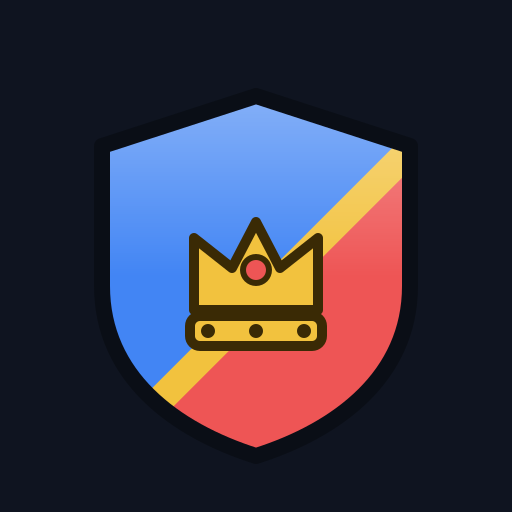
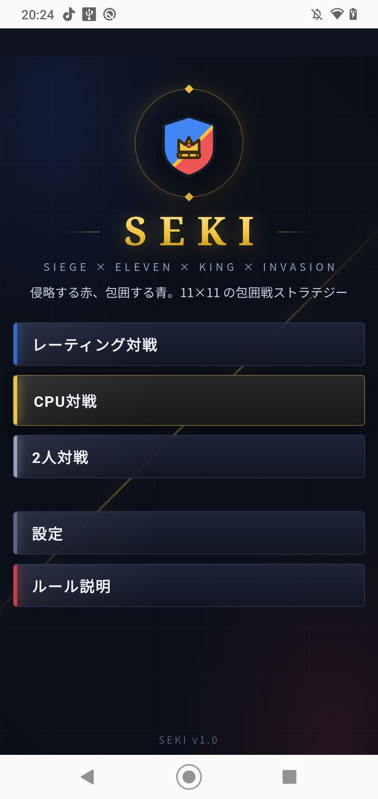

SEKI
11×11 ボード戦略
テスト中11×11マスの対戦ボードゲームです。CPU、同じスマホを挟んだ相手、オンラインの相手と指します。

起動した直後の画面です。レーティング対戦、CPU対戦、2人対戦のどれで指すかを選びます。設定とルール説明のボタンも、この画面にあります。
対局中の盤です。上が赤、下が青で、それぞれキングを中心に駒が並んでいます。上の「市民の損害」と、下の棋譜で、いま何手目で何が動いたかが分かります。
勝ち方は2つ
相手のキングを取るか、相手の市民を6人討つと勝ちです。市民は動けないので、守りながら攻めます。
駒
- キング：全方向に1マス。相手の駒を倒すと、スカウトをランクアップできます。
- 英雄：キングの前に立つ3人。敵を倒すと、仲間をレベルアップできます。
- キャプテン：盾を構え、全方向に3マス進む最強の駒です。
- ソルジャー：弓を持ち、全方向に2マス進む主力です。
- スカウト：前後に2マス。相手の陣地の端まで行くと進化します。
- 市民：動けません。6人討たれると負けです。
対戦モード
- CPU対戦：30人の相手と、レベルの順に戦います。2周目からは全員が最強レベルです。
- 2人対戦：1台のスマホを挟んで指します。相手側の表示は上下が逆になります。
- レーティング対戦：オンラインで相手を探し、勝敗でレートが動きます。1手30秒の持ち時間で、ランキングもあります。
城壁や草原などの盤面と、駒のデザインを選べます。動きのアニメーションと効果音も設定で変えられます。
こんな人に
- チェスや将棋が好きで、もっと手軽に短く遊びたい
- 盤の上で駒を育てる遊びをしてみたい
- 1台のスマホで、友達や家族と対戦したい
よくある質問
ひとりでも指せますか
CPU対戦があります。同じスマホを挟んだ相手、オンラインの相手とも指せます。
盤は何マスですか
11×11マスです。赤と青が、それぞれキングを中心に駒を並べて指します。